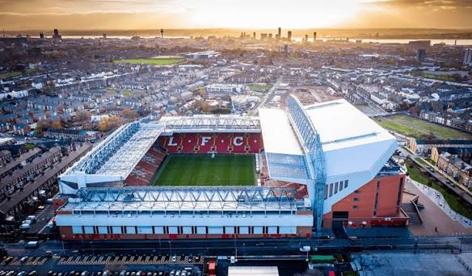
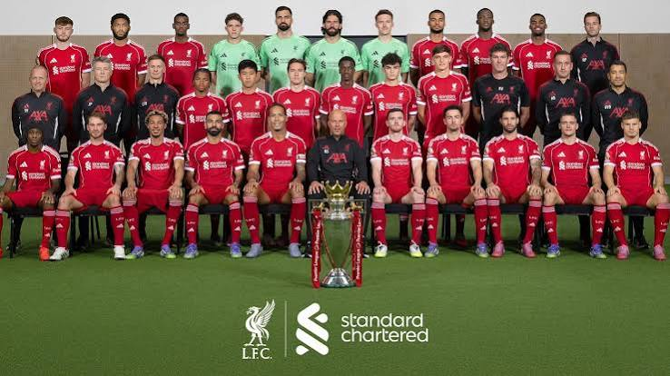

Founded
1892
England
Discover the history, stadium, legendary players, major trophies, records, and interesting facts about Liverpool Football Club.
Introduction
Liverpool Football Club is a professional soccer club based in Liverpool, England. The club was founded in 1892 and has developed into one of the most successful and recognizable clubs in English and European soccer. Liverpool is famous for its red uniforms, passionate supporters, historic players, and tradition of competing for major trophies.
Liverpool plays its home matches at Anfield, the stadium that has been the club's home since its beginning. Anfield is known for its energetic atmosphere and the famous Kop stand, where many of Liverpool's most passionate supporters gather during matches.
The club has enjoyed successful periods under several famous managers and has produced many legendary players. Kenny Dalglish, Ian Rush, Steven Gerrard, Mohamed Salah, Graeme Souness, John Barnes, and Fernando Torres are among the many famous players who have represented Liverpool.
Liverpool also has one of the most recognizable traditions in soccer. Before matches at Anfield, supporters sing "You'll Never Walk Alone." The song has become strongly connected with the club and represents the relationship between Liverpool, its supporters, and the city.

About the Club
Liverpool Football Club was founded in 1892 following a disagreement between Everton and Anfield owner John Houlding. Everton left Anfield, and Houlding formed a new team that became Liverpool Football Club. Liverpool joined the Football League soon afterward and began building its own history at Anfield.
The club won its first English league championship in 1901. Liverpool continued to win trophies during the first half of the 20th century, but one of the biggest changes in club history came when Bill Shankly became manager in 1959.
Shankly helped transform Liverpool into a major force in English soccer. He rebuilt the team, improved the club's culture, and helped Liverpool return to the top division. His work created the foundation for the enormous success that followed during the 1970s and 1980s.
Under managers such as Bob Paisley and Joe Fagan, Liverpool became one of Europe's strongest clubs. The team won numerous English league championships and European Cups. Liverpool's success during this period established the club as one of the biggest names in European soccer.
Liverpool's history has also included tragedy. In 1989, the Hillsborough disaster resulted in the deaths of 97 Liverpool supporters following injuries suffered at an FA Cup semifinal. The tragedy remains an extremely important part of the history of the club, its supporters, and the city of Liverpool.
Liverpool returned to the top of European soccer in dramatic fashion in 2005. In the UEFA Champions League final against AC Milan, Liverpool fell behind 3-0 during the first half. The team scored three goals during the second half and eventually won the match in a penalty shootout. The comeback became known as the "Miracle of Istanbul."
Another successful period began under manager Jürgen Klopp. Liverpool won the UEFA Champions League in 2019 and followed it by winning the Premier League in the 2019-20 season. That championship ended a 30-year wait for another English league title. Liverpool later added another league championship in the 2024-25 season.

Club Details
1892
Liverpool, England
Anfield
Red
Club Record
Ian Rush is Liverpool's all-time leading goalscorer with 346 goals for the club. The Welsh striker played for Liverpool during two different periods and became one of the most successful goalscorers in the club's history.
Success
Legendary Players
Liverpool has had a Ballon d'Or winner while representing the club. The award is one of the highest individual honors a soccer player can receive.
Michael Owen won the Ballon d'Or in 2001 after an outstanding year with Liverpool. He became one of the youngest players to win the award.
Did You Know?